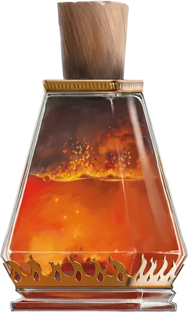

Зелье огненного дыхания
Potion of Fire Breath
Зелье, необычное

Рекомендованная стоимость 51-250 зм
После того, как вы выпили это зелье, вы можете бонусным действием выдохнуть огонь в цель, находящуюся в пределах 30 футов от вас. Цель должна совершить спасбросок Ловкости Сл 13, получая 4к6 урона огнём при провале или половину этого урона при успехе. Эффект оканчивается после того, как вы трижды используете огненное дыхание, или по истечении 1 часа.
Зелье представляет собой оранжевую мерцающую жидкость, над которой стелется дымок, выходящий наружу каждый раз, когда вы откупориваете пробку.